4130B73 return pipe from power steering case to rigid intermediate pipe r r for right hand drive versions
- Path
- Procedures > 41 STEERING > 4130 POWER ASSISTED STEERING > 4130B power steering hydraulic sytem > 4130B73 return pipe from power steering case to rigid intermediate pipe r r for right hand drive versions
- Kind
- repair procedure (removal / refitting; the operation number is the code)
- Applies to
- engines: 2.5 V6; all production periods
- Interactive page
- https://sloeber94.github.io/elrnDB-a156/en/#/3238165
Applies to: engines: 2.5 V6; all production periods; only with equipment: Right hand drive
 Removing
Removing
 Refitting
RefittingPlace the car on a ramp with the wheels perfectly straight.
Mark the position of the steering wheel in relation to the upper steering column shroud.
Drain the power steering fluid from the reservoir using a suitable syringe.
1. Undo the bolts (1a) and remove the power assisted steering fluid reservoir (1b) away from the engine bulkhead.
2. Disconnect the supply pipe to the power steering pump from the reservoir.
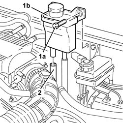
Applies to: engines: 2.5 V6; all production periods; only with equipment: Right hand drive
7055B54 under-engine guard - r r
1. Undo the fixing bolt (1a) and disconnect the lower steering control shaft (1b) from the power steering box.
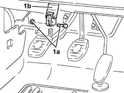
Applies to: engines: 2.5 V6; all production periods; only with equipment: Right hand drive
Remove retaining ring and withdraw the fail-safe device from the steering box pinion.
4450B10 Front WHEEL (one) - R.R. (right)
Working from the right front wheelarch, open the power steering pipe collar.
1. Undo the nut (1a) and disconnect the front anti-roll bar joints (1b) from the lower suspension forks.
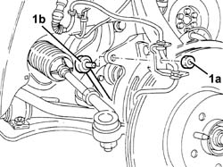
Applies to: engines: 2.5 V6; all production periods; only with equipment: Right hand drive
1076B52 exhaust pipe (one) leaving l/h or r/h exhaust manifold - r + r (left and right)
1. Position a hydraulic jack under the differential.
2. Undo bolts (2a) and remove rear power unit mount assembly (2b).
3. Remove the rigid exhaust pipe support.
Remove the hydraulic jack from under the differential.
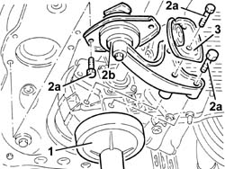
Applies to: engines: 2.5 V6; all production periods; only with equipment: Right hand drive
1. Undo the nuts (1a) and remove the protective heat shield (1b) from the power steering box.
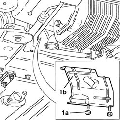
Applies to: engines: 2.5 V6; all production periods; only with equipment: Right hand drive
1. Undo the bolts (1a) and nut (1b), then remove the power steering pipe rear mount (1c).
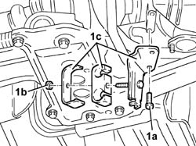
Applies to: engines: 2.5 V6; all production periods; only with equipment: Right hand drive
1. Undo the bolts (1a) and nuts (1b) of the gearlever and handbrake lever mount (1c).
2. Position a hydraulic jack complete with a suitable flange and secure it to the suspension crossmember.
3. Undo the bolts (3a) securing the front suspension beam (3b) to the body, then lower as required using the hydraulic jack.
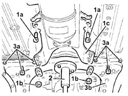
Applies to: engines: 2.5 V6; all production periods; only with equipment: Right hand drive
1. Undo the bolts fixing the power assisted steering box to the front suspension crossmember.
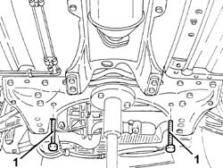
Applies to: engines: 2.5 V6; all production periods; only with equipment: Right hand drive
Move the power steering box fully forward.
1. Working from the left front wheelarch, disconnect the return pipe from the power steering box to the rigid pipe.
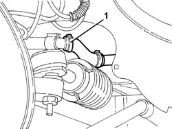
Applies to: engines: 2.5 V6; all production periods; only with equipment: Right hand drive
1. Unscrew the connector (1a) on the return pipe from power steering box to the rigid pipe on the steering box side (1b).
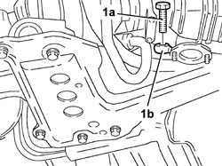
Applies to: engines: 2.5 V6; all production periods; only with equipment: Right hand drive
1. Release the fuel return pipe from the power steering box to the rigid pipe from the collars, then remove by withdrawing from the right front wheelarch.
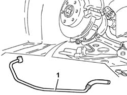
Applies to: engines: 2.5 V6; all production periods; only with equipment: Right hand drive
Refitting
RemovingFit the return line from power steering box to rigid pipe and secure to the collars on the power steering box.
1. Connect the return pipe from power steering box to rigid pipe (1a) to the power steering box and secure by tightening fitting (1b) to the specified torque.
 | Fastening | Component | Ø | Value (daNm) |
|---|---|---|---|---|
1b | Connector | POWER STEERING/EXCHANGE BOX RUBBER HOSE | M12 | Power steering box side 2.8 - 3.2 |
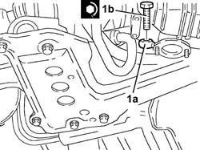
Applies to: engines: 2.5 V6; all production periods; only with equipment: Right hand drive
Working from the left front wheel arch, connect the return hose from the power steering box to the rigid pipe.
Refit the power steering box and secure to the front suspension crossmember by tightening the bolts to the specified torque.
| Fastening | Component | Ø | Value (daNm) |
|---|---|---|---|---|
- | Bolt | POWER STEERING BOX | M14 | Suspension front. crossmember side 12.4 - 13.7 |
Place the front suspension crossmember in its housing secure to the body by tightening the bolts to the recommended torque.
| Fastening | Component | Ø | Value (daNm) |
|---|---|---|---|---|
- | Bolt | ENGINE OR ROD ANCHORAGE BEAM | M12 | (Bodyshell side) 10.8 - 13.2 |
| Fastening | Component | Ø | Value (daNm) |
|---|---|---|---|---|
- | Bolt | ENGINE OR ROD ANCHORAGE BEAM | M10 | (Bodyshell side) 8.1 ÷ 9.9 |
Tighten the bolts and nuts securing the gearlever and handbrake lever mount to the body.
Fit the power steering pipe rear mount and fix it using the bolts.
Fit the power steering box heat shield and secure with the nuts.
1. Position a hydraulic jack under the differential.
2. Fit power unit rear mount (2a) complete with rigid exhaust pipe mount (2b) and secure by tightening bolts (2c) and (2d) to torque.
| Fastening | Component | Ø | Value (daNm) |
|---|---|---|---|---|
2c | Bolt | POWER UNIT RIGID REAR MOUNT | M12 | (Gearbox side) 7.5 ÷ 9.2 |
| Fastening | Component | Ø | Value (daNm) |
|---|---|---|---|---|
2c | Bolt | POWER UNIT RIGID REAR MOUNT | M16 | Gearbox side 10.2 - 12.6 |
| Fastening | Component | Ø | Value (daNm) |
|---|---|---|---|---|
2d | Bolt | INTERM RUBBER MOUNT | M8 | (Front suspension crossmember side) 2.7 - 3.4 |
Remove the hydraulic jack from under the differential.
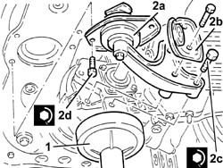
Applies to: engines: 2.5 V6; all production periods; only with equipment: Right hand drive
1076B52 exhaust pipe (one) leaving l/h or r/h exhaust manifold - r + r (left and right)
Working from the right front wheel arch, connect the power steering hose to the collar.
4450B10 Front WHEEL (one) - R.R. (right)
Fit the fail-safe device on the power steering box pinion and secure using the retaining ring.
Connect the lower steering shaft to the power steering box and secure by tightening the bolt to the specified torque.
| Fastening | Component | Ø | Value (daNm) |
|---|---|---|---|---|
- | Bolt | STEERING SHAFT JOINTS | M8 | Power assisted steering box side 1.9 - 2.1 |
7055B54 under-engine guard - r r
Connect the hose carrying oil to the power steering pump to the reservoir.
Place the power assisted steering fluid reservoir back in its housing and fix it to the engine bulkhead using the bolts.
Fill the power steering circuit with the recommended fluid.
 | Type | Component | Name | Qty. |
|---|---|---|---|---|
- | Fluid | POWER ASSISTED STEERING CIRCUIT | TUTELA GI/A | - |
Bleed the power steering system as described below
With the front wheels raised off the ground, with the engine switched off turn the steering wheel to full lock, left and right, 4-5 times.
Check and, if necessary, top up the fluid level in the reservoir.
Position the vehicle on the ground and start up the engine.
Carry out 4 - 5 complete steering wheel rotation cycles (right and left).
Top up the fluid level in the reservoir.